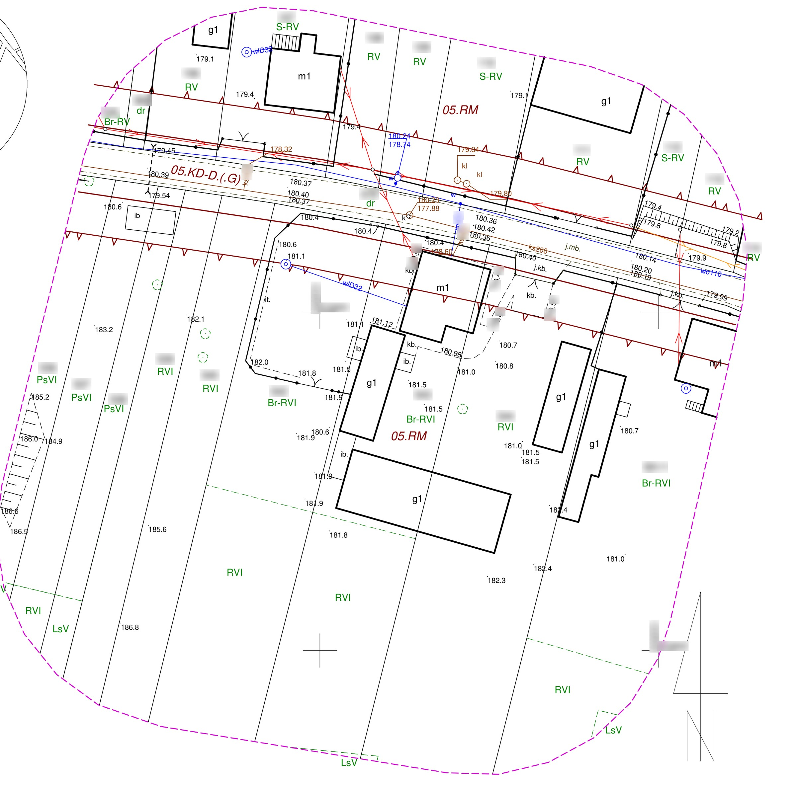
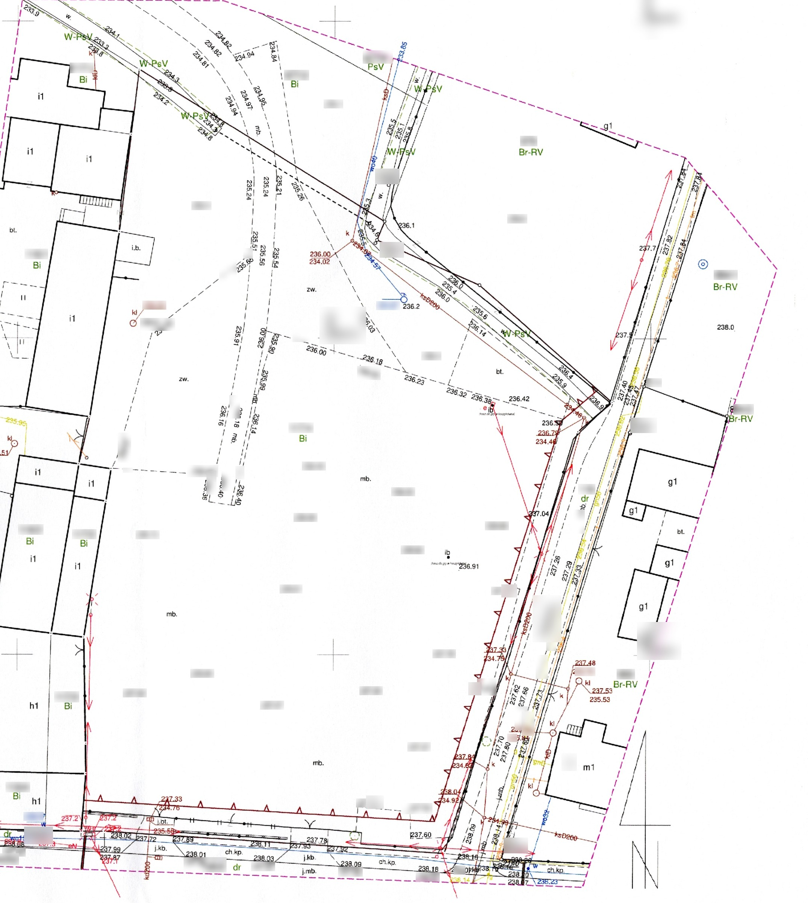
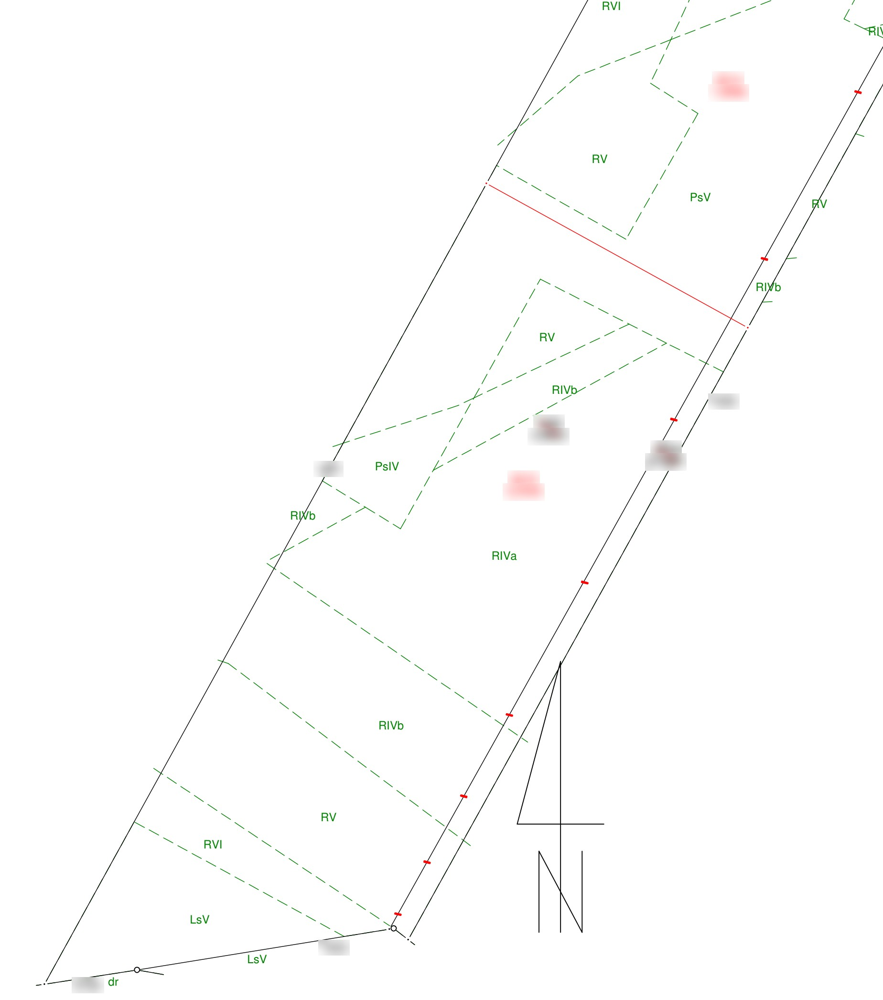

Operaty geodezyjne
Kompletowanie i składanie operatów technicznych do ośrodków.
Zaufali mi:
Zdalne opracowania kameralne dla firm geodezyjnych z całej Polski: |
firm geodezyjnych współpracuje oficjalnie
programów geodezyjnych na poziomie zaawansowanym
formatów: GML, KCD, GIV, PDF, DXF, DWG
pracy zdalnej – cała Polska
01 / O mnie
Zdalnie współpracuję z kilkoma firmami geodezyjnymi jako podwykonawca prac biurowych i kameralnych. Przejmuję czasochłonną część opracowania – od operatu, przez pliki wsadowe, po mapę wynikową – tak, aby Twoja ekipa mogła skupić się na pomiarach w terenie.
02 / Usługi i warsztat
Kompletowanie i składanie operatów technicznych do ośrodków.
Pliki do ośrodków w formatach .gml, .kcd, .giv.
Mapy sytuacyjno-wysokościowe na podstawie pomiaru i zasobu.
Mapy z inwentaryzacji obiektów budowlanych i sieci uzbrojenia.
Projekty podziału nieruchomości wraz z dokumentacją.
Mapy w PDF, DXF i DWG – gotowe do dalszej pracy.
03 / Realizacje



04 / Kontakt
Opisz zlecenie – odpowiem najszybciej jak to możliwe.